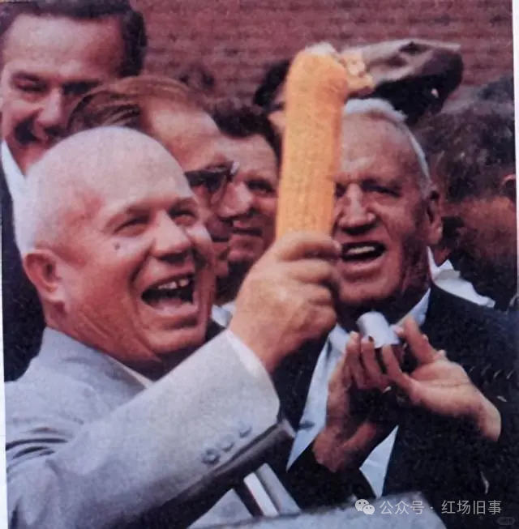
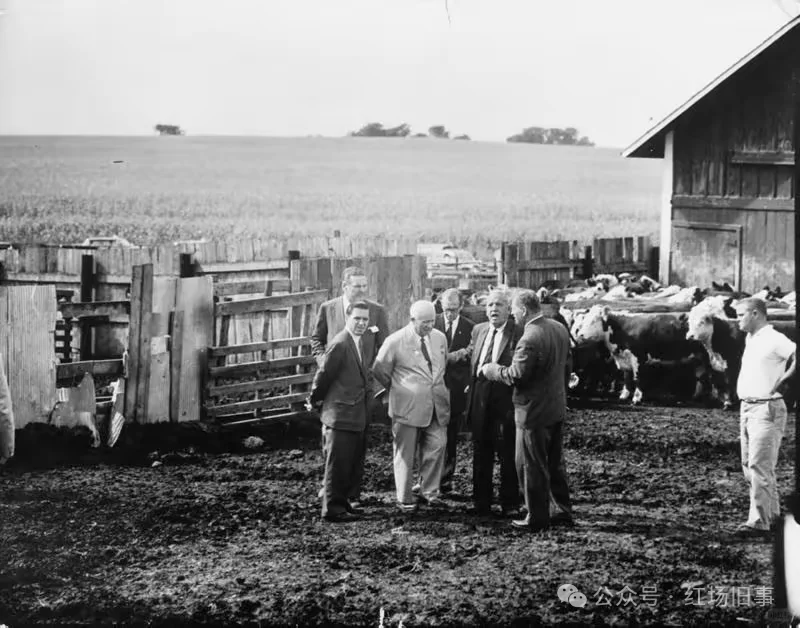
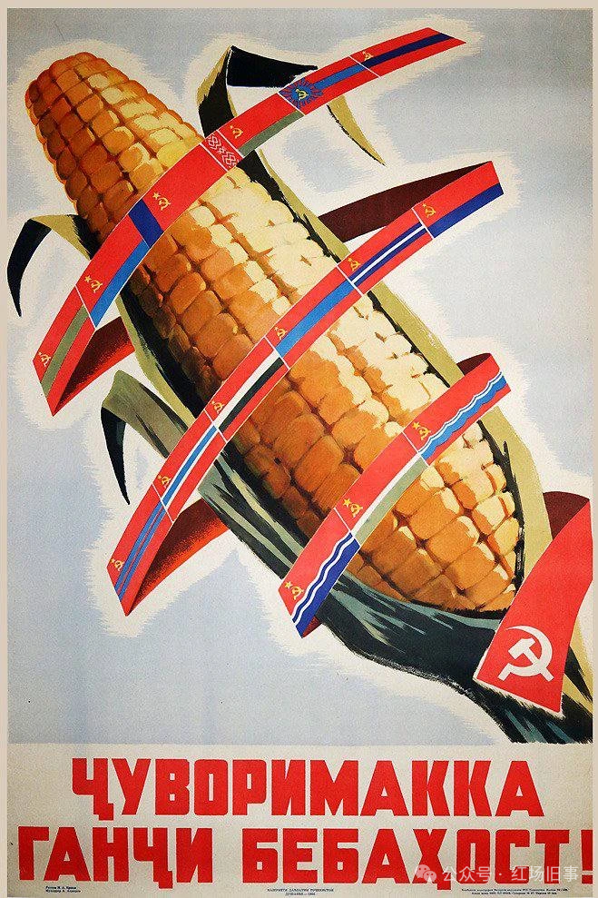
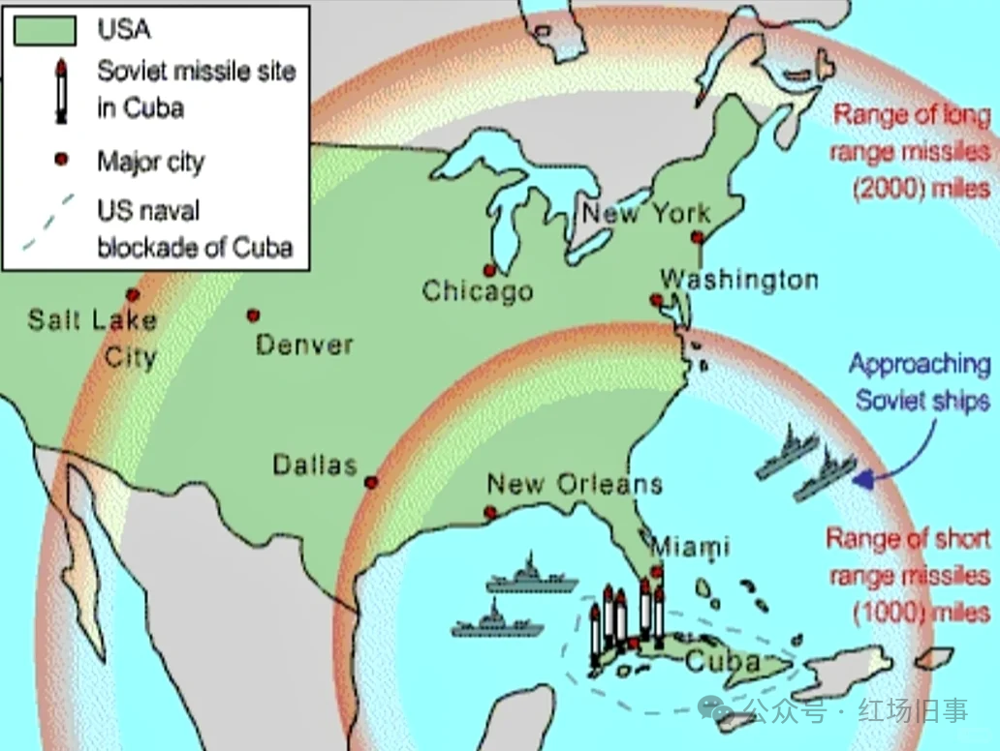
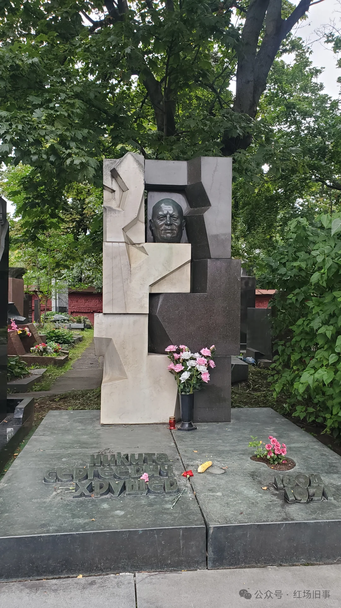

玉米、火箭、住房：赫鲁晓夫给苏联留下的三个遗产
文字与图片版权归各自权利人所有。 查看公众号原文 ↗
赫鲁晓夫改革：玉米、垦荒、住房、冒险外交1959年，莫斯科郊外一位美国农场主站在苏联田野里，看着漫山遍野的玉米，露出复杂的笑容。陪同的赫鲁晓夫兴致勃勃：“我们将在全国推广玉米！它能解决饲料问题，让每个苏联人每天都能喝上牛奶、吃上肉！”

美国人礼貌地点头，心里嘀咕：这里的气候根本不适合种玉米。赫鲁晓夫听不见这些嘀咕。他坚信自己的农业改革能够改变苏联。而他的坚信，不仅改变了苏联的农业，还改变了6亿苏联人的生活、苏联的外交走向，甚至险些改变人类的命运。
一、玉米运动：好心办坏事的农业改革赫鲁晓夫对农业的执念源于现实：1953年，苏联人均粮食产量还低于1913年沙俄时代。农民在集体农庄里没有积极性，城市居民排长队买面包。赫鲁晓夫的药方有三个：第一，垦荒。1954年起，数百万共青团员奔赴哈萨克斯坦和西伯利亚，开垦了4200万公顷荒地——相当于两个英国的面积。头几年收成不错，但缺乏生态保护，1962年起连续遭遇黑风暴，上千万公顷耕地被毁。

第二，玉米运动。赫鲁晓夫访美时看到美国玉米高产，回国后强制推广玉米种植。从波罗的海到西伯利亚，从北冰洋沿岸到黑海之滨，到处种玉米。问题在于苏联大部分地区气候寒冷，玉米根本长不熟。农民被迫砍掉已经种下的黑麦种玉米，收成惨淡。民间流传一句讽刺话：“玉米是地里长出来的水泥。”第三，取消“义务交售制”。1958年，赫鲁晓夫取消了农民必须低价把农产品卖给国家的制度，改为国家统一采购。这减轻了农民负担，但采购价格依然偏低，工业品价格却很高，农民用剪刀差的方式继续被剥夺。农业改革的结果令人失望：垦荒运动前五年增产明显，但很快陷入生态危机；玉米运动成了笑柄；采购制度改革没能真正激励农民。1963年，苏联甚至不得不动用黄金储备进口粮食——这对于一个宣称“建成共产主义”的大国来说，是莫大的讽刺。赫鲁晓夫后来在回忆录中叹息：“农业改革是我最用心的地方，也是最失败的地方。”

1963年苏联宣传海报
二、住房革命：普通人第一次住上独门独户如果说农业改革是赫鲁晓夫的失败，那住房改革就是他的功绩。十月革命后，苏联城市居民长期住“公共公寓”——一个家庭住一间房，厨房、厕所、浴室几户共用。1950年代，莫斯科人均居住面积仅4平方米，比沙俄时代还低。赫鲁晓夫提出：“让每个家庭都有自己的住房！”他的方案是工业化建房：在工厂预制混凝土板，运到现场像搭积木一样组装。这种楼被称为“赫鲁晓夫楼”——五层，无电梯，小户型，但每个家庭都有独门独户的厨房和卫生间。从1957年到1964年，苏联用这种模式建造了超过1300万套住房，约5400万城市居民搬进新家。莫斯科的切廖穆什金区成为样板，全苏各地的“赫鲁晓夫楼”如雨后春笋般出现。一个普通工人回忆：“我们第一次不用排队上厕所，第一次可以在自己家里洗澡。虽然房间很小，但那是‘我们的’。”赫鲁晓夫楼的缺点是明显的：隔音差、面积小、设计粗糙、寿命短。但它解决了苏联最紧迫的社会问题。直到今天，俄罗斯仍有约10%的人口住在赫鲁晓夫楼里。“赫鲁晓夫楼”是苏联历史上第一次，也是唯一一次大规模解决城市住房问题的尝试。
三、冒险外交：从柏林到古巴赫鲁晓夫的外交像他的玉米运动一样，充满冒险色彩。柏林危机（1958-1961）：赫鲁晓夫要求西方从西柏林撤军，将西柏林变成“非军事化自由市”。艾森豪威尔拒绝。1961年，赫鲁晓夫与肯尼迪在维也纳会晤，肯尼迪的强硬让赫鲁晓夫恼火。8月13日，柏林墙在一夜之间建起，成为冷战的物理标志。更危险的冒险在加勒比海。1962年10月16日，肯尼迪收到U-2侦察机的照片：苏联正在古巴部署中程导弹，射程覆盖美国本土大部。

赫鲁晓夫的理由是：美国在土耳其部署了瞄准苏联的导弹，为什么苏联不能在古巴部署瞄准美国的导弹？但他低估了美国的反应。10月22日，肯尼迪宣布对古巴实施海上封锁，要求苏联撤走导弹。美军进入三级战备状态，B-52轰炸机携带核弹头24小时在空中待命。苏军也进入战备，核潜艇携带核鱼雷前往古巴海域。这是人类历史上最接近核战争的13天。危机最高潮时，一艘苏联潜艇被美军深水炸弹逼出水面，艇长以为战争已经爆发，一度准备发射核鱼雷。幸好副艇长说服他保持冷静。10月26日，赫鲁晓夫给肯尼迪发去一封长达6000字的私人信件，提出撤走导弹的条件：美国保证不入侵古巴。10月27日，第二封信提出附加条件：美国从土耳其撤走导弹。当天，一架U-2在古巴上空被击落，飞行员死亡。
肯尼迪的顾问们主张立即报复。肯尼迪选择绕过第二封信，接受第一封信的条件，并秘密承诺6个月内从土耳其撤走导弹。10月28日，莫斯科电台宣布：苏联决定从古巴撤走导弹。危机结束。
四、代价与遗产古巴导弹危机后，赫鲁晓夫与肯尼迪建立了秘密通信渠道，次年签署《部分禁止核试验条约》。危机让两个超级大国意识到：核战争打不得。但在苏联国内，赫鲁晓夫的地位被削弱了。军方认为他在古巴问题上软弱，外交部门认为他冒险主义，党内认为他决策轻率。赫鲁晓夫的外交冒险，连同他失败的农业改革、草率的工业改组、随意的人才政策，为他两年后被赶下台埋下了伏笔。1964年10月，赫鲁晓夫在黑海度假时接到紧急电话回莫斯科开会。会上他被指责“主观主义”“唯意志论”，被迫宣布“自愿退休”。此后的20年，赫鲁晓夫住在莫斯科郊外的别墅里，靠写回忆录打发时间。1971年，他死于心脏病发作，葬在新圣女公墓。墓碑由雕塑家涅伊兹韦斯内设计，黑白两色的大理石交错——象征着对他的评价：黑白分明，毁誉参半。

赫鲁晓夫是一个矛盾的人。他批判斯大林，但自己也搞个人崇拜；他想改善民生，却用行政命令种玉米；他推动“解冻”，却又派坦克镇压匈牙利；他险些把世界推入核战，却又与肯尼迪建立了人类历史上最危险的危机之后的信任机制。他最深的悲剧在于：他想改革体制，但用的是体制给他的方法。他想打破教条，但用的是教条训练出来的思维方式。他让5400万苏联人第一次住上自己的房子，却也让他们在粮店门口排更长的队。他让苏联人知道斯大林犯了错误，却没有告诉他们为什么还会发生错误。他把苏联的导弹送到古巴，把世界的命运推到悬崖边，然后在最后一刻收手。赫鲁晓夫下台后，一个笑话在莫斯科流传：问：赫鲁晓夫和玉米有什么区别？答：玉米至少还能喂猪。这个笑话过于刻薄。一个更公平的评价来自俄罗斯历史学家梅德韦杰夫：“赫鲁晓夫是苏联历史上唯一真心想让老百姓过好日子的领导人。只可惜，他不知道怎么做到。”在莫斯科的新圣女公墓，赫鲁晓夫的墓前常年有人献花。那些被他赶下神坛的斯大林的受害者，那些住进“赫鲁晓夫楼”的老工人，那些在古巴导弹危机中当过兵的退役军官，偶尔会来看他。他们站在黑白相间的墓碑前，想起那个在联合国敲皮鞋的矮胖老头，想起那个说“我们要埋葬你们”又主动退让的对手，想起那个让苏联人第一次拥有自己厨房的领导人。他失败了。但他努力过。